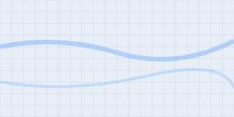

—
--:--
location_on
جاري تحديد الموقع...
اضغط لبدء نوبة عملك.
Tap to start your shift.
جاري التحقق من الموقع...
schedule
ساعات العمل
Work Hours
Work Hours
0h 00m
الهدف ٨س | Goal: 8h 00m
login
آخر حضور
Last Check-in
Last Check-in
--:--
غير متصل | Offline
الموقع المباشر Live Location
تتبع مباشر | Live
person_pin_circle
أنت | YOU